Read this chapter once before you pick up a drill. Budget a weekend: the steel on day one, the assembly on day two.
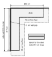
The finished desk needs 252 × 317 cm of clear floor in the corner: each top is 249 cm long and stands 3 cm off its wall. MEASURE ON HARDWARE Measure both walls (wall to wall) and the baseboard thickness before you start.
You also need floor space for one top at a time lying face down on the blanket (249 × 65 cm plus room to kneel all round), and a bench with two clamps for drilling the two 213 cm steel rails. All steel is drilled on the bench, never under the desk.
Clear the corner before chapter G: the ALEX units are placed by the walls before the tops go on.
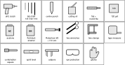
| Tool | For |
|---|---|
| Corded or 18 V drill, clutch set low | all holes and screws |
| Bits: 5/64, 1/8, 7/32 in HSS; 7/16 in cobalt | ring and trim pilots; top and steel pilots; rail screw holes; fitting bolt holes |
| Centre punch (or a nail) | only for a mark the jig or plug cannot reach |
| Cutting oil or 3-in-1 | every hole in steel |
| Flat file, round file, 120 grit, acetone, flat black enamel | deburr, ease a tight hole, scuff, degrease, paint the rails |
| Robertson #2 bit + 3 in magnetic extension | rail screws beside the vertical leg (the chuck would hit the leg otherwise) |
| Two wrenches or sockets for the 3/8-16 bolts (one for the head, one for the nut) | the corner fittings |
| Two clamps, 6 in or larger | hold each rail on its line; hold a fitting as a drilling template |
| Tape measure, combination square, masking tape, pencil | layout and the tape labels on the tops and rails |
| Spirit level, 60 cm or longer | setting the legs and feet |
| Calipers | top thickness, pad diameter, ALEX panel (the measurements on the last page of this chapter) |
All of them are in parts/tools/; parts/README.md has print settings. Print as saved, no supports. Never scale a printed tool in the slicer: its distances are the tool. The lipped and fenced tools print lip-up and are turned over to use.
| Tool | What it does | Qty |
|---|---|---|
| Edge T-square. Lip over any edge; holes named for their distance from the edge in mm: 50 (ring centres on the ALEX, 5 cm in), 85 (feet, 8.5 cm in, with the plate's four 1/8 in holes 46.8 mm apart round it), 100 (legs L2–L6, 10 cm in) and 150 (leg L1, 15 cm in). | 1 | |
| Leg jig. Lip over the wall edge; an OLOV's centre and its five 1/8 in holes in one placement: 100 pattern for L2–L6 (solid circle), 150 pattern for L1 (dashed circle, ringed holes). | 1 | |
| Feet corner jig. Fences on a far corner of a face-down top; a foot's centre 8.5 cm from both edges and its four 1/8 in holes 46.8 mm apart: F2, F4, F7, F8. | 1 | |
| ALEX corner template. Fences on an ALEX corner; ring centre 5 cm from both edges, the ring's three 5/64 in holes (radius 33 mm) and the three optional ALEX-foot holes (radius 14.5 mm). Top and bottom corners. | 1 | |
| Rail marking gauge. Lip over the angle's edge; pencil notches at 19 mm (screw line on the flat leg) and 29 mm (bolt line on the vertical leg). | 1 | |
| Rail drill jig. Lip over the flat leg's free edge; a 1/8 in bore on the 19 line; sight grooves on the station line. PETG. | 1 | |
| Slot plug (fitting-centring-plug). Drops into a fitting's 21 × 12 slot; a 1/8 in bore dead centre, so the pilot cannot wander in the slot's play. | 2 | |
| Pilot drill guide. SET tower (45 mm for the 1/8 in bit, 35 mm for the 5/64 in) and five depth pucks: 12 PLATE, 15 LEG, 10 EDGE, 12 ALEX, 25 RAIL. Re-set the bit every time you change it. | 1 set | |
| Foot height gauge. A C with 102 mm inside: all eight feet wound to the same height without a ruler. | 1 | |
| Wall gauge. An L: the 65 leg (6.5 cm, ALEX back to wall) and the 30 leg (3 cm, a top's raw edge to wall). | 1 |
Also print the eight locating rings (P10) now: parts/structure/foot-ring, PETG or ABS, flange down. Their 52 mm bore suits the 50 mm pad; measure your pad first (last page of this chapter).
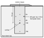
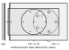
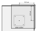
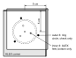
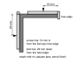
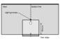
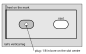
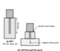
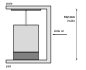
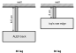
Every dimension in this manual carries one of three confidence labels, or a fourth label that is an instruction to you:
| VERIFIED | Measured on the purchased part, or taken from the part's own geometry file (the printed parts). |
| SOURCE-DEFINED | Defined by the project documents (the build manual): a design position, not a measurement. It is right by definition; you put the part there. |
| ASSUMPTION / FIELD CHECK | An engineering estimate or a check done on site. Confirm it before you rely on it. |
| MEASURE ON HARDWARE | Not yet measured on your parts. Measure it yourself before the step that uses it, and stop if it differs. |
| Measure | Expected | Label | Used in |
|---|---|---|---|
| EKBACKEN thickness, both tops (calipers) | 28 mm | MEASURE ON HARDWARE | D: every screw depth into the tops. At 27 mm, shorten every screw into the top by 1 mm. |
| Delivered rail lengths, both pieces, and the angle thickness | 213 cm layout length (bought as 84 in = 213.4 cm); 4.8 mm thick | MEASURE ON HARDWARE | E: hole stations. 213 cm is the layout length; the far end may carry the extra. |
| Strut fitting slots, positions from the heel | 21 × 12 mm slots, centres 29.15 and 78.45 mm from the heel (legs 100.5 × 41 mm) | VERIFIED | E, F: measured 23 Oct 2026; the fitting with the slot plug is still the drilling template. |
| Feet pad diameter (calipers) | 50 mm | MEASURE ON HARDWARE | G: the rings are bored 52 mm for a 50 mm pad; re-print them if yours differs. |
| ALEX top panel thickness | 15.9 mm (5/8 in), measured 23 Oct 2026 | VERIFIED | G: the ring screws reach 13.4 mm, 2.5 mm of panel remains; the 12 ALEX pilot leaves 3.9 mm. |
| ALEX height, with and without its stock feet | 70.0 cm | ASSUMPTION / FIELD CHECK | G: with the feet it sets the underside at 80.2 cm. |
| VIVO top arm reach; maximum clamp opening | reach about 89 mm ASSUMPTION / FIELD CHECK; opening 31 mm or more | MEASURE ON HARDWARE | I: the clamps on the 28 mm top plus a pad plate. |
| Room: wall to wall along both walls; baseboard thickness | 252 cm and 317 cm | MEASURE ON HARDWARE | B (work area), G (placing the ALEX units by the walls). |
| Feet load rating | unknown; the design wants 50 kg or more each | ASSUMPTION / FIELD CHECK | C (P09); check the listing or the maker. |
Already measured and printed as VERIFIED: the OLOV plate (⌀105 mm, five 5.5 mm holes on an 85 mm circle), the feet plate (59.5 mm, four 5.2 mm holes 46.8 mm apart), the strut fittings (21 × 12 mm slots at 29.15 and 78.45 mm from the heel), the VIVO crossbar (50.2 cm centre to centre), pole (35 mm), pole inset (43.7 mm), clamp back (80 × 17.5 mm) and lower pad.